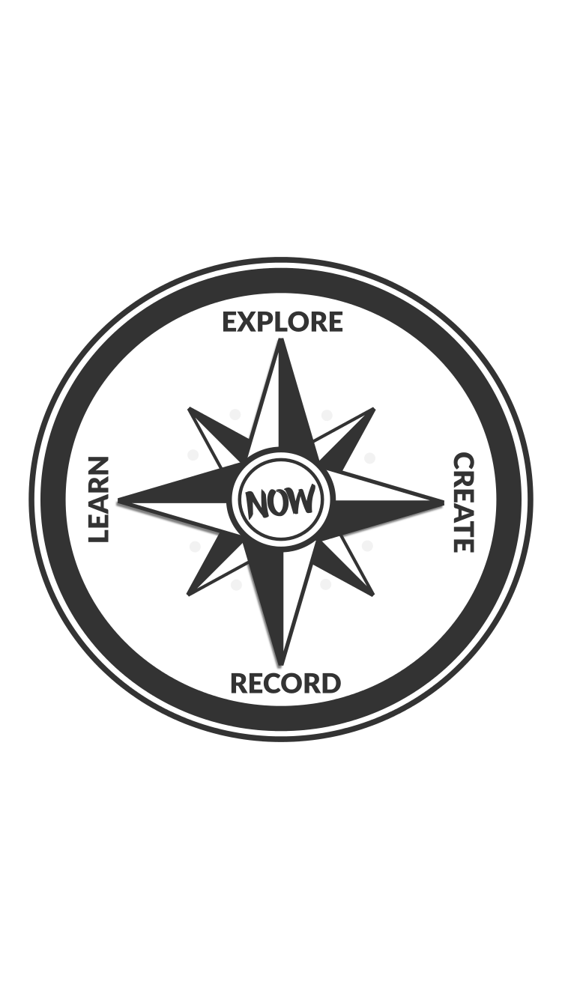

There are so many decisions you make on a daily basis. So I put together this little compass image to set as the the lock screen on my phone. It is there to remind me as I make decisions, what values I have, and based on those values, how to make the right decision.
